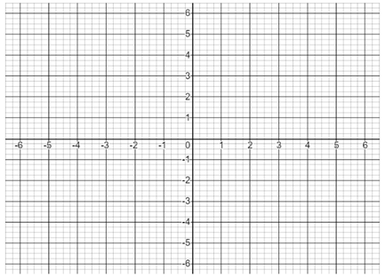
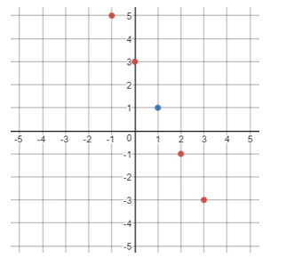
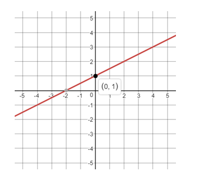
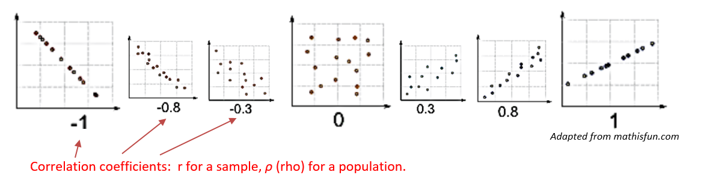
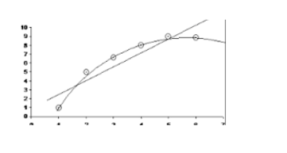
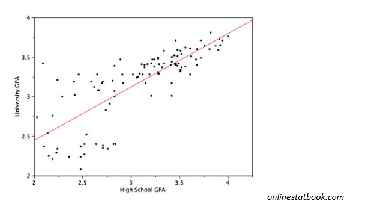
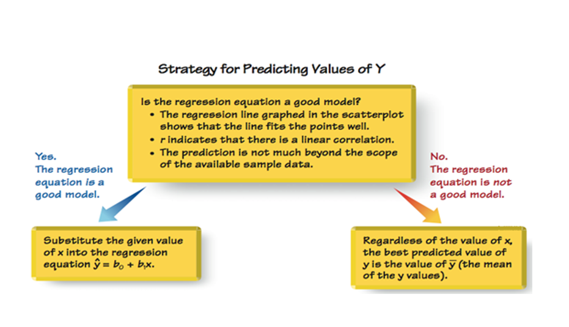
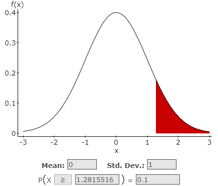
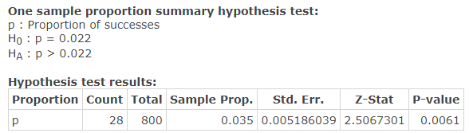
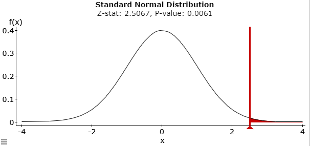

Unit 4 Hypothesis Testing
9.1 Correlation
Overview of Scatter Plots and Lines
- Construct a scatter plot of the following 5 sets of paired data: (0,2) (1,4) (3,2) (-4,1) (1,-3)

- Graph 5 points on the coordinate system below that form a line with the given slope: m=-2.
One of the 5 points must be (1,1)

- Draw a line using the following information: m=1/2 and the y-intercept is (0,1)

Correlation
Correlation is the relationship between 2 variables.The data can be represented by the ordered pairs (x, y), where x is the independent variable and y is the dependent variable.
Linear Correlation Coefficients:
- \(\rho\) (“rho”): the linear correlation coefficient for the POPULATION
- \(r_{TS}\): the linear correlation coefficient for SAMPLE DATA
Possible Correlation Coefficient Values

Graphing Correlation Coefficients on an interval from -1 to 1.

Linear correlations are not the only correlations.
A word of caution before we begin our work on Linear Regression: you can find the "line of best fit" for ANY paired data, but it is still not a good fit if the data is not linear. Always look at the scatter plot.

Linear Regression
- From Algebra Class:
- \(y=mx+b\)
- m = slope
- b = y-intercept
- In Statictics:
- \(\hat y=b+mx\)
- m = slope
- b = y-intercept
The regression equation expresses a relationship between x (the independent variable) and y (the dependent variable).
The graph of the regression equation is called the regression line, or line of best fit.
The regression line does not usually pass through all the sample points. That is why the “hat” is used over the y. This indicates we are calculating a predicted value and not necessarily an actual value.


Steps for Regression and Correlation Test:
- Define \(H_0\) and \(H_A\) (the same for every regression test)
\(H_0\): \(\rho=0\) There is no linear correlation in the population.
\(H_A\): \(\rho \neq 0\) There is some linear correlation in the population.
Note: A regression test is always a two-tailed test.
- Run the Regression and Correlation Test
There are two ways to look at Test Statistics and Critical Values, using the T-distribution AND using the Pearson Correlation Coefficient. We will look at both:
- Identify the information you will use to shade your graph:
- Identify the information about your sample:
- Flu: In a clinical trial, 28 out of 800 patients taking a prescription drug complained of flulike symptoms. Suppose that it is known that 2.2% of patients taking competing drugs complain of flulike symptoms. Test the claim that more than 2.2% of this drug’s users experience flulike symptoms as a side effect at the 0.1 significance level.
- Design the Study
- The original Claim:
\(p > 0.022\) - \(H_0\):
\(p \leq 0.022\) < assume \(H_0\):\(p = 0.022\) - \(H_A\):
\(p > 0.022\) - Type of Test:
Right-tailed test - Level of Significance:
\(\alpha =0.01\) - Critical Value(s):
\(z=1.282\) (Determines shaded area(s))

- The original Claim:
- Results
- Test Statistic: A standardized value based on the sample data, assuming the null is true.
\(z=\frac{\hat{p}-p}{\sqrt{\frac{p q}{n}}} = \frac{.035-.022}{\sqrt{\frac{(.022)(.978)}{800}}}=2.5067\)
- p-value:
0.0061 - Rejection Criteria: Reject \(H_0\) if
p value \(< \alpha\) and the test statistic (z) is in the rejection region. - Decision about the null:
Reject \(H_0\) Reason 1: 0.0061 < .01
Reason 2: 2.5067 is in the rejection region
- Concluding statement about the claim:
There is sufficient evidence to support the claim more than 2.2% of the drug’s users experience flu like symptoms.


- Test Statistic: A standardized value based on the sample data, assuming the null is true.
- Design the Study